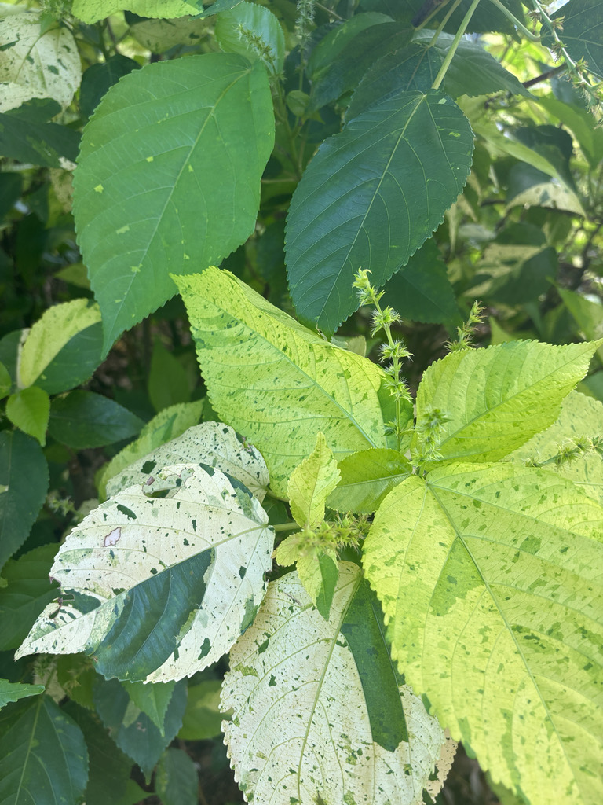

- The leaves do what flowers usually do — they're the show. And they intensify in the sun.
- Dozens of cultivars exist, ranging from copper and bronze to pink-splashed and almost red, selected over centuries for their foliage intensity.
- Native to the Pacific Islands, it was collected by early European explorers who couldn't believe a non-flowering plant could look this ornamental.
- Completely non-toxic and extremely low-maintenance in South Florida's climate.
Native to Fiji and neighboring South Pacific islands. Member of the Euphorbiaceae family — same family as Poinsettia, Peregrina, and the Pencil Tree also in the park.
- The Copperleaf genus Acalypha contains over 450 species, making it one of the largest genera in the Euphorbiaceae family. Leaves contain phytochemicals with antimicrobial and antifungal properties that have been studied for use against MRSA-based diseases — an unexpected connection between a common Florida landscape shrub and cutting-edge antibiotic research.
- The species name wilkesiana honors Charles Wilkes, the American naval commander who led the 1838–1842 United States Exploring Expedition — one of the great scientific voyages of the 19th century, which charted Antarctica for the first time and collected thousands of Pacific plant specimens. The copperleaf came to scientific attention through that expedition.
- The Java White cultivar is one of the more restrained members of a spectacularly flamboyant family — the standard Acalypha wilkesiana comes in bronze-red, purple, yellow, orange, and pink cultivars. Their unusual foliage color attracts strong attention and can easily look overdone — two or three shrubs are usually sufficient for a specimen or accent planting.
- Advice that many Florida landscapers have memorably ignored.
The Copperleaf's inconspicuous flowers — long pendant male catkins and shorter female spikes — attract small native bees and insects that work the pollen. The dense, large-leaved foliage provides good cover and nesting structure for small birds and lizards.
While not a primary nectar or fruit plant, its year-round foliage mass makes it a reliable shelter component in the mixed shrub border, and its Euphorbiaceae family members are known to support specialist insect communities. Wildlife value is honest but modest — this plant earns its place through foliage, not ecological output.
Separate male and female flowers appear on the same plant. Male flowers are in long drooping spikes (catkins) up to 8 inches long; female flowers are in shorter spikes often partly hidden among the leaves.
Small three-lobed capsules. Not ornamentally significant.
The Java White cultivar has striking creamy-white and green marbled leaves up to 8 inches long, heart-shaped with toothed margins and fine hairs on both surfaces. The variegation is the primary identification feature of this cultivar.
Easily propagated by air-layers or cuttings. Does not come true from seed — cultivar characteristics maintained only through vegetative propagation.
The foliage IS the show — the Java White cultivar has distinctive creamy-white and green marbled leaves visible from a distance. Flowers are inconspicuous but the long drooping male catkins are visible when present. Leaf color is strongest in full sun.
The leaves are eaten as a cooked vegetable in parts of Nigeria, but this isn't grown as a food plant and casual consumption isn't recommended.
No significant toxicity is documented for people. In sensitive pets the sap may cause mild skin or stomach irritation.


- © Lilah Thomas (CC-BY-NC), via iNaturalist
- © sandytrailslvr (CC-BY-ND), via iNaturalist